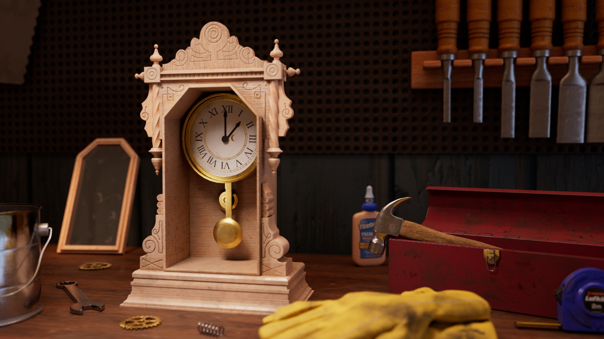
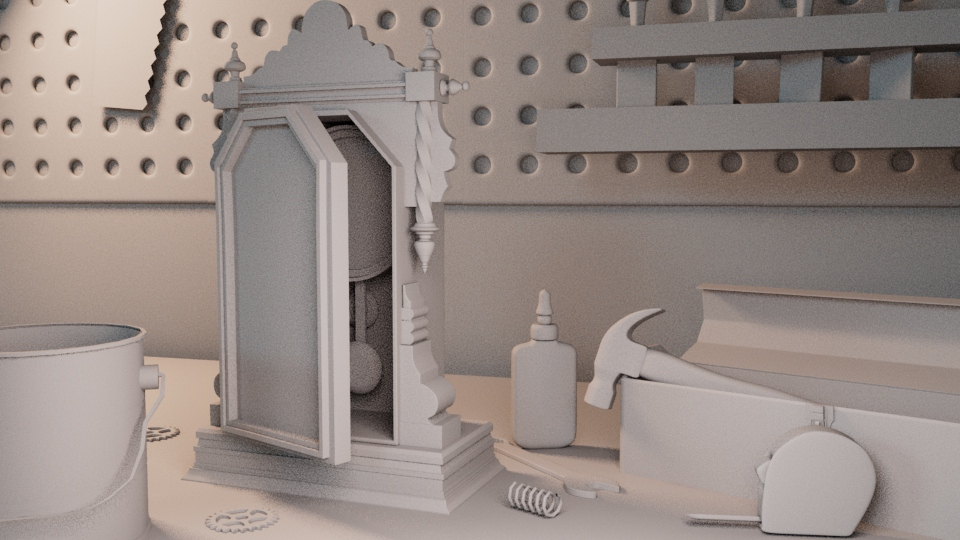

07 / Project detail
Still Life


I created this scene from modeling through final render, using the environment to tell a story and make the clock feel actively in the process of being carved and assembled.
I modeled in Maya and textured the assets in Substance Painter. For the work gloves, I used Houdini to create a cloth simulation with natural wrinkles and folds before lighting and rendering with Arnold.